Objective
Document the investigation and response to alert SOC338, which was triggered as part of a phishing alert.
Investigation steps
Reviewed the high level details of alert SOC338 and took ownership of the case for further investigation to be carried out.
Date and Time: Mar, 13, 2025, 09:44 AMSource Email Address: update@windows-update.site
Destination Address: dylan@letsdefend.io
Rule: Lumma Stealer - DLL Side-Loading via Click Fix Phishing
Trigger Reason: Redirected site contains a click fix type script for Lumma Stealer distribution.
Action: Allowed
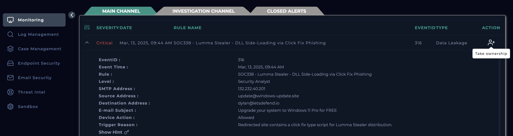
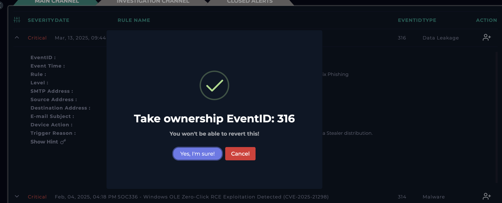
The alert is transferred into the Investigation Channel, where I created the Case to follow playbook and mark whether this alert if a true or false positive.
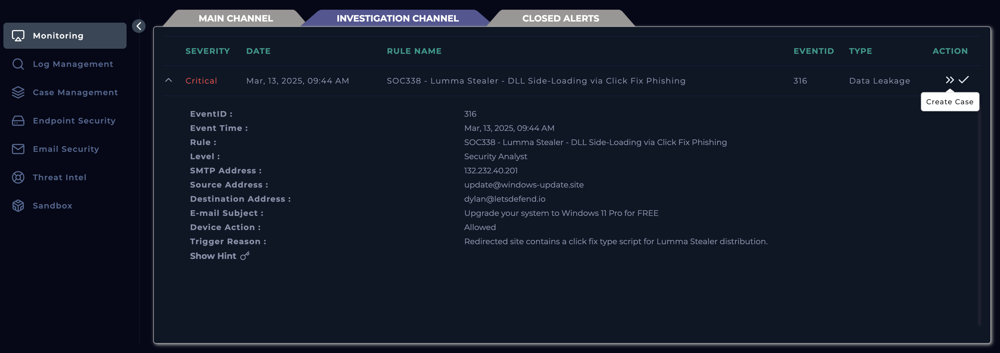
Initiated the playbook to follow a structured procedure in investigating the alert .

To identify the answers to the following questions from the playbook, utilised the alert details along with email trail:
When was it sent? Mar, 13, 2025, 09:44 AMWhat is the email's SMTP address? 132.232.40.201
What is the sender address? update@windows-update.site
What is the recipient address? dylan@letsdefend.io
Is the mail content suspicious? No other than suspicious mail ID.
Are there any attachment? Yes – URL embedded to button
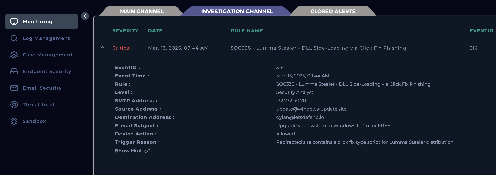
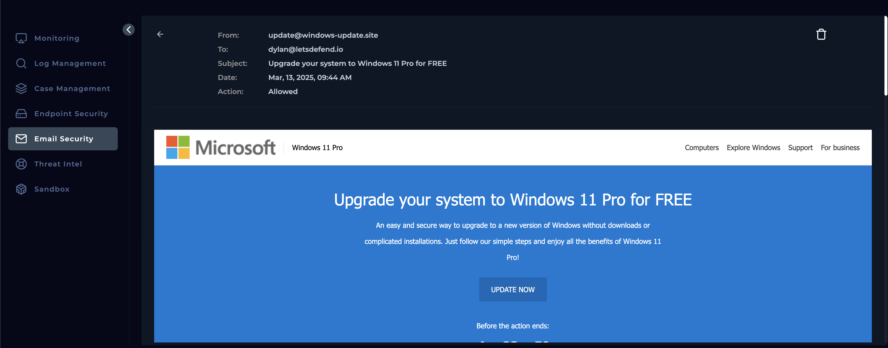
To progress further, I copied the link embedded to the Update Now button in the email (https://www.windows-update.site/) and processed it through Virus Total. The results from Virus Total showed the10/98 vendors have flagged this URL as malicious and the category that was commonly used were spyware and malware.
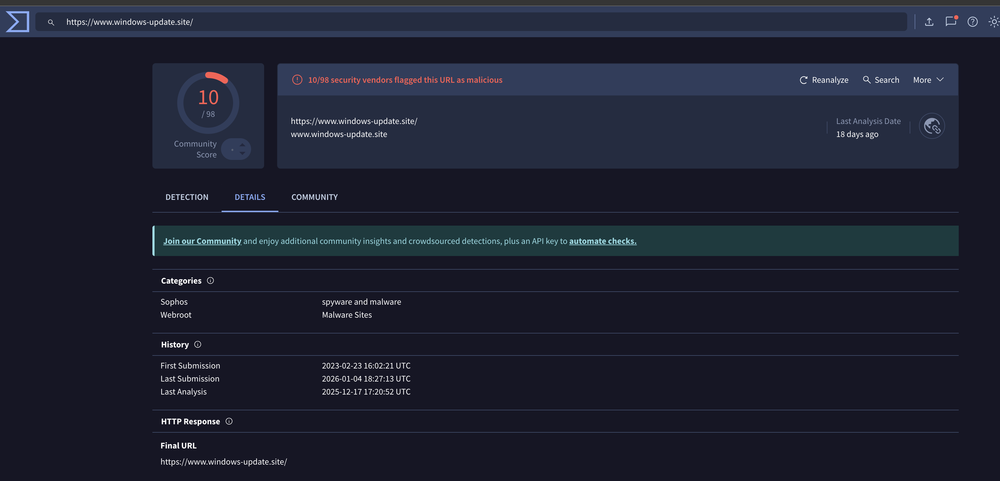
Next step of the playbook is to verify if the email was successfully delivered to the user, which is the case as the alert states ‘Device Action: Allowed’ indicating victim received and opened it.
As per the instructions from the playbook to delete the malicious email from user's mailbox, I headed over to the Email Security module and filtered down for the email before clicking the delete button.
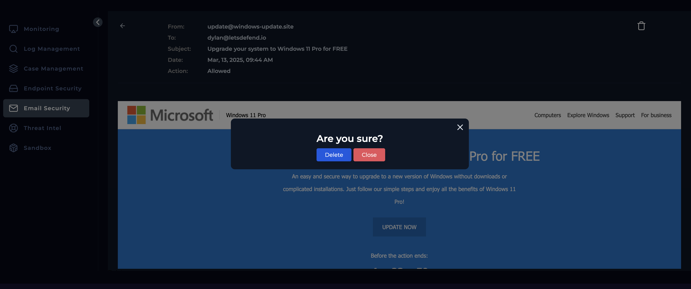
To validate whether the user had opened the suspicious link, I utilised the Endpoint Security module and filtered for the recipient – Dylan and under Browser History, I can see this malicious link was accessed.
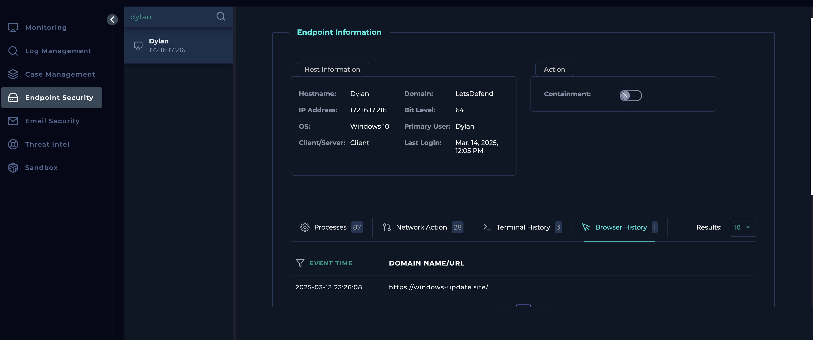
As the malicious link was opened by the recipient, the device must be contained through the Endpoint Security module to prevent any malware from spreading to other connected systems and to secure the device for effective forensic analysis and remediation.
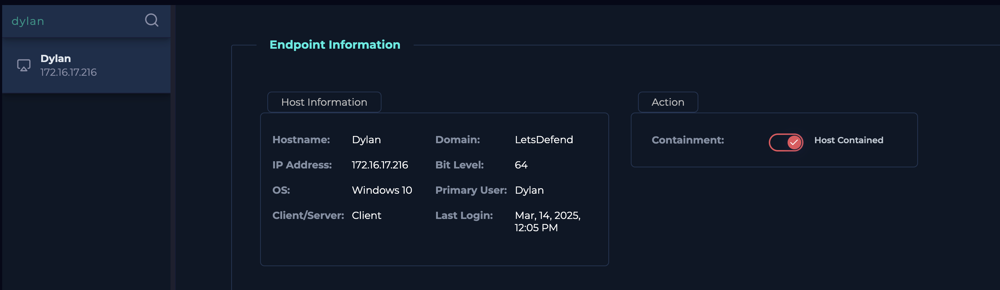
To check if this is a planned test, I headed over to the Email Security module and searched for the keyword of ‘Planned’ which resulted in two emails but neither were relevant to this case.
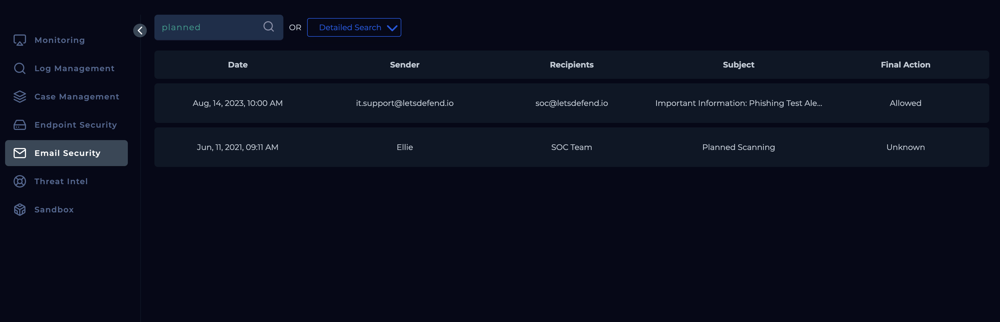
The alert was closed as a True Positive as with all the evidence found through the above steps, we can see the email was malicious and the user had clicked the malicious link embedded in the email.
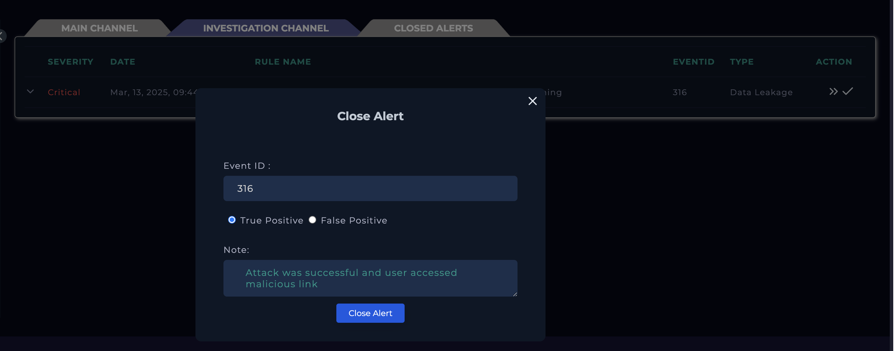
Analysis
The investigation of alert SOC338 began with a review of the high-level alert details, after which ownership of the case was taken and it was moved into the Investigation Channel to be handled in line with the established playbook. The alert was triggered by a phishing email associated with Lumma Stealer DLL side-loading via a click-fix technique. Key email metadata was analysed, confirming the message was sent on March 13, 2025, from the SMTP address 132.232.40.201, using the sender address update@windows-update.site, and delivered to dylan@letsdefend.io. While the email content itself did not appear overtly suspicious, it contained an embedded URL within an “Update Now” button, which warranted further scrutiny.
The embedded link (https://www.windows-update.site/
) was analysed using VirusTotal, where 10 out of 98 security vendors flagged it as malicious, commonly categorising it as spyware or malware. The alert status indicated the email was allowed, confirming successful delivery to the user. Further validation through the Endpoint Security module revealed that the recipient had accessed the malicious link, increasing the likelihood of compromise. In response, the malicious email was deleted from the user’s mailbox via the Email Security module, and the affected endpoint was contained to prevent potential lateral movement and enable secure forensic analysis. Finally, a check was performed to determine whether the activity was part of a planned security test, but no relevant planned emails were identified. Based on these findings, the alert was treated as a true positive, with appropriate containment and remediation actions taken.
Key learnings
- One of the key learnings from this investigation is the importance of following a structured playbook when handling phishing and malware-related alerts. By systematically reviewing alert metadata, email headers, and delivery status, it was possible to quickly determine the scope and potential impact of the threat. Even though the email content itself did not appear overtly malicious, the presence of an embedded URL highlighted how modern phishing attacks often rely on subtle social engineering techniques rather than obvious indicators, reinforcing the need to scrutinise links and sender domains carefully.
- Another important takeaway was the value of integrating threat intelligence tools, such as VirusTotal, into the investigation process. The URL analysis results provided external validation that the link was associated with spyware and malware activity, which strengthened confidence in classifying the alert as a true positive. This demonstrated how third-party intelligence can complement internal alerting mechanisms and help analysts make informed decisions, particularly when dealing with low-noise or borderline indicators.
- The investigation also highlighted the critical role of endpoint visibility in confirming user interaction and assessing risk. Verifying browser history through the Endpoint Security module confirmed that the malicious link had been accessed, escalating the incident from a potential threat to an active risk. This reinforced the necessity of promptly containing affected endpoints to prevent further spread and to preserve the system for forensic analysis and remediation.
- Finally, the process emphasised the importance of validation and due diligence before closing an alert. Checking whether the email was part of a planned test helped rule out false positives and ensured the response actions were justified. Overall, the investigation underscored the need for attention to detail, cross-platform analysis, and timely response in SOC operations to effectively manage phishing-driven malware threats.